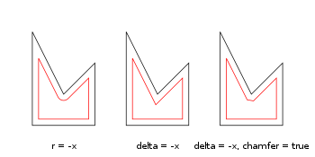
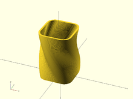

Offset generates a new 2d interior or exterior outline from an existing outline. There are two modes of operation. radial and offset. The offset method creates a new outline who's sides are a fixed distance outer (delta > 0) or inner (delta < 0) from the original outline. The radial method creates a new outline as if a circle of some radius is rotated around the exterior (r>0} or interior (r<0) original outline.
The construction methods can either produce an outline that is interior or exterior to the original outline. For exterior outlines the corners can be given an optional chamfer.
Parameters
Result for different parameters. The black polygon is the input for the offset() operation.
Positive r/delta value

Negative r/delta value
Examples
// Example 1
linear_extrude(height = 60, twist = 90, slices = 60) {
difference() {
offset(r = 10) {
square(20, center = true);
}
offset(r = 8) {
square(20, center = true);
}
}
}
// Example 2
module fillet(r) {
offset(r = -r) {
offset(delta = r) {
children();
}
}
}

Example 1: Result.
Created with the Personal Edition of HelpNDoc: Benefits of a Help Authoring Tool